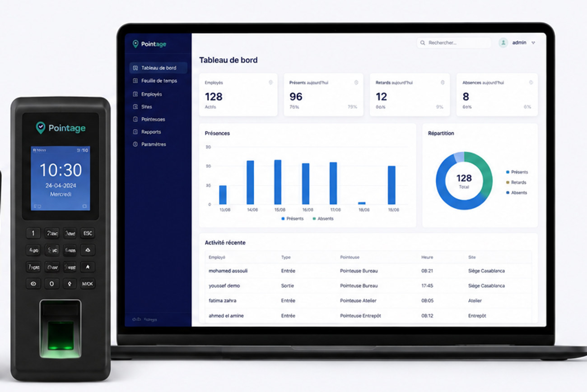
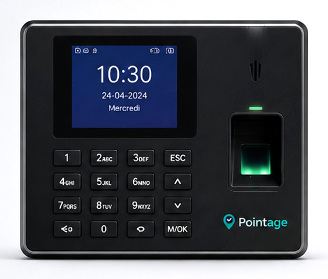
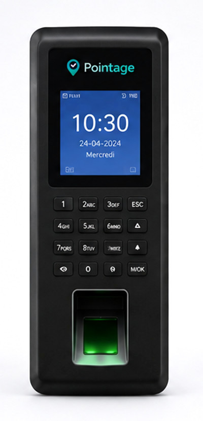
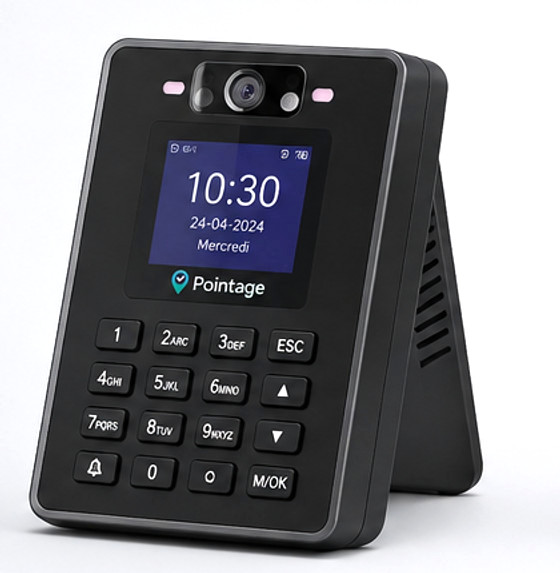
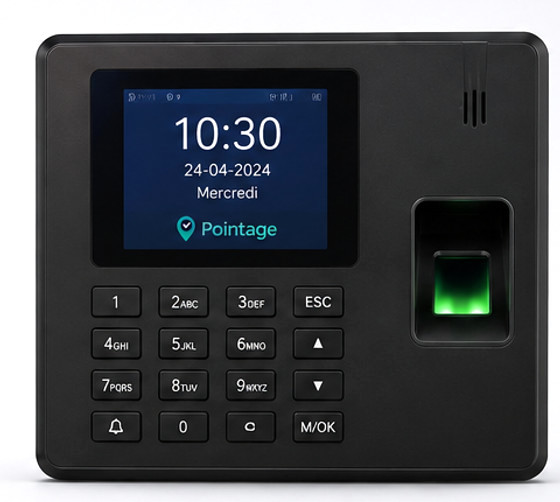
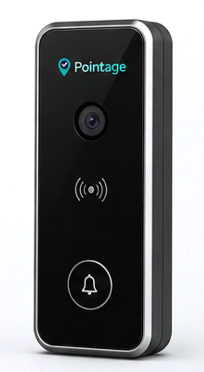
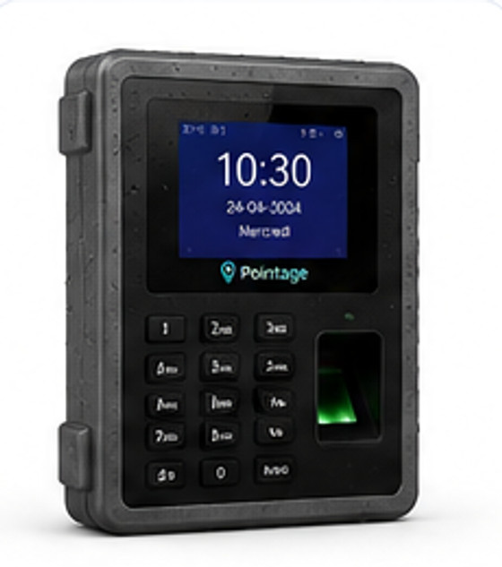
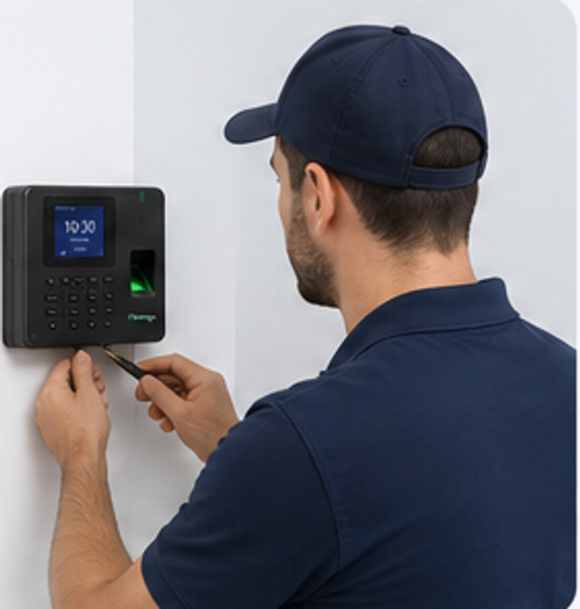
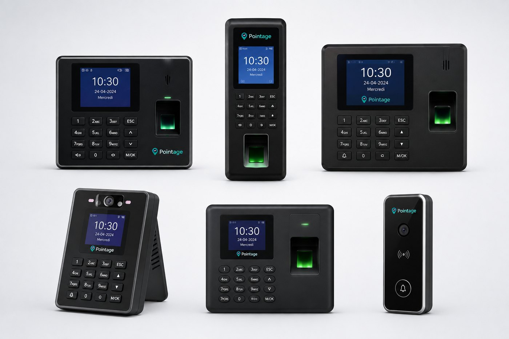

Pointeuses fiables
Technologie avancée et haute précision : empreinte digitale, badge RFID, code PIN ou reconnaissance faciale selon le modèle.
Pointeuse biométrique, installation et système — Maroc
Nous fournissons la pointeuse — empreinte digitale, badge RFID ou reconnaissance faciale —, nos techniciens l'installent chez vous, et elle alimente directement le logiciel Pointage. Les présences, les retards et les heures se calculent tout seuls.

L'offre
Vous n'avez pas à réunir un matériel, un installateur et un logiciel de trois côtés différents : nous livrons l'ensemble, et nous en restons responsables.
Technologie avancée et haute précision : empreinte digitale, badge RFID, code PIN ou reconnaissance faciale selon le modèle.
Mise en place rapide et configuration complète par nos techniciens, sur chacun de vos sites.
Logiciel de gestion, rapports et suivi en temps réel, accessibles depuis n'importe quel navigateur.
Accompagnement et assistance à chaque étape, du choix du modèle au SAV en cas de panne.
Comment ça fonctionne
Une fois la borne posée, plus personne n'a à saisir quoi que ce soit.
Les employés pointent leurs entrées et leurs sorties sur la borne, en une seconde.
Les données sont transmises automatiquement au système, par réseau ou par Wi-Fi.
Le système rapproche les pointages, calcule les heures travaillées et repère les retards.
Vous consultez les présences, les retards et les absences, et vous exportez le détail.
Vous décidez sur des chiffres fiables, disponibles en temps réel.
Nos pointeuses
Des équipements performants pour un pointage fiable et sécurisé. Nous vous aidons à choisir selon vos locaux et vos effectifs.

Idéale pour les bureaux et les espaces intérieurs.

Format étroit pour les couloirs et les espaces réduits.

Reconnaissance du visage, rapide et sans contact.

Connectée en réseau pour une gestion centralisée de plusieurs sites.

Sécurisez vos portes avec une solution tout-en-un.

Conçue pour résister aux conditions difficiles.
Données protégées et chiffrées, de la borne jusqu'au tableau de bord.
Enregistrements précis et horodatés, impossibles à antidater.
Les pointages remontent au système sans aucune manipulation.
Tableaux de bord et exports complets pour un meilleur suivi.
Pose professionnelle, puis support technique réactif.
Installation
Une installation rapide, sécurisée et adaptée à votre environnement. Vous n'avez ni câblage à prévoir, ni configuration à faire vous-même.
Nous choisissons avec vous l'emplacement de chaque borne, puis nous vérifions l'alimentation et le réseau.
Fixation murale, câblage propre et mise en réseau de la pointeuse, sur chacun de vos sites.
Employés, empreintes ou badges, horaires, sites et droits d'accès : tout est configuré avec vous.
Prise en main de votre équipe le jour même, puis assistance technique en cas de besoin.

Une solution complète
La borne enregistre, le logiciel interprète. C'est cette combinaison qui vous fait gagner du temps, pas le matériel seul.


Tarifs
Le prix dépend du modèle choisi, du nombre de bornes et du nombre de sites à équiper. Dites-nous où vous en êtes, nous chiffrons l'ensemble.
Un site, une pointeuse
Sur devis
Plusieurs bornes, plusieurs sites
Sur devis
Besoins spécifiques
Sur devis
L'autre solution
Chantiers, tournées, interventions : là où poser une borne n'a pas de sens, le pointage mobile géolocalisé prend le relais. Les deux solutions se rejoignent dans le même tableau de bord.
FAQ
Oui. Elle enregistre les pointages dans sa mémoire interne et les transmet au système dès que la connexion revient. Aucun pointage n'est perdu pendant une coupure.
Empreinte digitale, badge RFID, code PIN et, selon le modèle, reconnaissance faciale. Vous pouvez en combiner plusieurs sur la même borne.
Nos techniciens. Repérage de l'emplacement, fixation, raccordement électrique et réseau, puis paramétrage complet et enrôlement des employés avec vous.
Oui. Chaque site reçoit la ou les bornes qu'il lui faut, et tous les pointages remontent dans un seul tableau de bord, avec le détail site par site.
Oui, avec les modèles de contrôle d'accès : ouverture par badge ou par empreinte, droits gérés personne par personne et alarme intégrée.
Oui. Les équipes présentes au siège pointent sur la borne, celles du terrain depuis leur téléphone, et toutes les heures se retrouvent au même endroit.
Le SAV est assuré par nos techniciens : diagnostic à distance d'abord, puis intervention sur site si le matériel doit être réparé ou remplacé.
La feuille de temps se met à jour en continu et s'exporte en CSV sur la période de votre choix. Le fichier s'ouvre dans Excel et se transmet tel quel au comptable.
Parlons-en
Décrivez-nous vos locaux — nombre d'employés, nombre de sites à équiper — et nous vous recommandons le modèle adapté, avec le coût de l'installation et du logiciel.